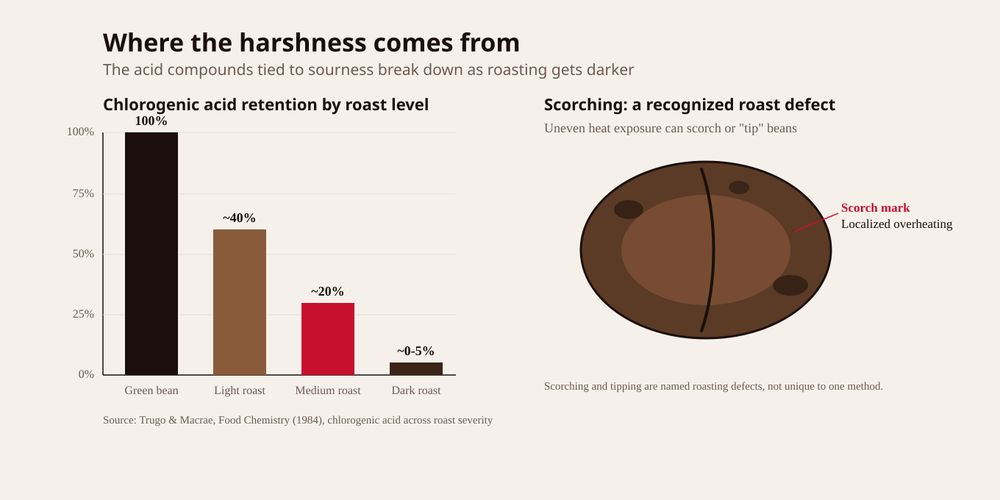
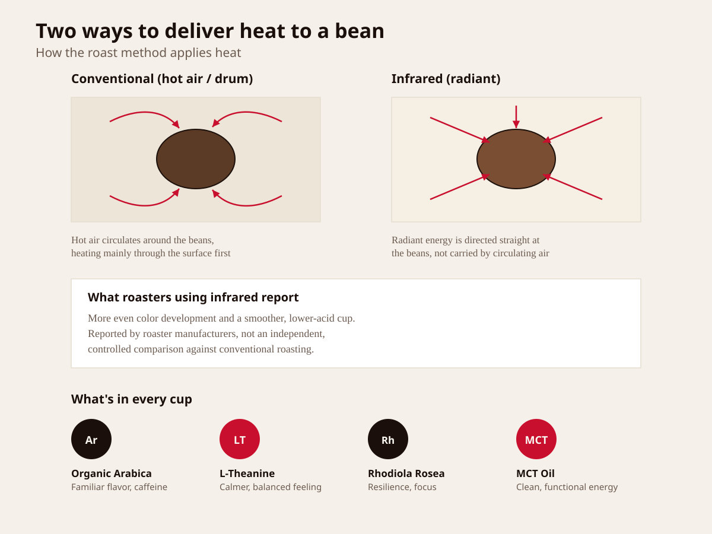

You Don't Hate Coffee. You Hate What It Does to You.
Your coffee gives you energy, then takes it away.

Coffee can make the morning feel easier. It gives you a familiar lift before work, class, errands, or whatever the day has planned.
But that first burst can come with a trade-off.
The energy fades. Your focus becomes harder to maintain. Your stomach may start to feel sour, heavy, or unsettled. You might still love the taste and ritual of coffee, but you are less enthusiastic about what happens after the cup.
For some people, the discomfort is especially noticeable when coffee is the first thing they have in the morning. The drink that was supposed to help them feel ready for the day ends up leaving them uncomfortable instead.
That can make coffee feel like a choice between enjoying your routine and protecting your stomach.
But the problem may not be coffee itself.
It may be the way the beans are roasted.
Why Your Morning Coffee Can Feel So Harsh

Most coffee beans go through a roasting process that uses intense heat to develop their flavor, aroma, and color.
That heat is necessary for creating coffee as we know it, but the way it is applied can affect the final cup. The roasting process can affect the coffee's flavor, aroma, acidity, and overall drinking experience. For some people, darker or more intensely roasted coffee may feel harsher, especially when consumed on an empty stomach.
The result is familiar to many daily coffee drinkers.
You take a few sips for the energy, then spend the next few hours dealing with the after-effects.
You may add milk or sugar to soften the taste. You may avoid drinking coffee on an empty stomach. You may even cut back, only to find yourself reaching for another cup when your energy drops.
The ritual is still something you enjoy. The problem is what comes with it.
This is why the roasting process matters.
A Different Way to Roast Coffee

ZENBEAN uses infrared roasting to create a smoother coffee experience.
Instead of relying on the same roasting approach used for many conventional coffees, infrared roasting is designed to distribute heat more evenly through the beans. This helps develop the coffee's flavor while reducing the harsh, burnt character that can make some cups difficult to enjoy.
The goal is simple: coffee that still tastes like coffee while aiming for a smoother and less harsh drinking experience.
ZENBEAN is made with organic Arabica coffee and combines it with L-Theanine, Rhodiola Rosea, and MCT oil.
Each ingredient has a specific role in the formula.
Organic Arabica coffee provides the familiar coffee flavor and caffeine that people expect from their morning cup.
L-Theanine is an amino acid commonly used in products designed to support a calmer, more balanced feeling alongside caffeine.
Rhodiola Rosea is an adaptogenic botanical often included in formulas intended to support mental performance and resilience during demanding days.
MCT oil provides a source of medium-chain triglycerides and adds another functional element to the blend.
Together, the ingredients are designed for people who want their coffee routine to feel more considered.
Coffee That Fits Into Your Day
A smoother cup can change how you approach the rest of your morning.
You may find that you need less sugar or cream to balance the flavor. You can keep the familiar coffee ritual without feeling like you have to prepare for the discomfort afterward.
ZENBEAN contains approximately 80–120mg of caffeine per serving, depending on the format. It is designed for people who want a more balanced coffee routine, with caffeine alongside ingredients commonly used in formulas for focus and everyday mental performance.
That does not mean coffee affects everyone in exactly the same way. Your response can depend on your caffeine tolerance, sleep, food intake, and daily routine.
The difference is that ZENBEAN gives you another option.
Instead of choosing between strong coffee and a sensitive stomach, you can try a coffee made with the roasting process and overall drinking experience in mind.
Choose the Format That Works for You
ZENBEAN is available in two formats.
The 24-pod K-Cup box is convenient for busy mornings. Place a pod into your compatible coffee machine, brew, and get on with your day.
The 12oz Ground Bag is a better fit for people who prefer preparing coffee their own way. It works with standard brewing methods and lets you make the amount you want, whenever you want it.
Both formats are made for the same purpose: keeping coffee part of your routine while making the cup feel smoother and easier to enjoy.
A Small Change to Your Coffee Routine
You do not have to give up coffee just because your current cup leaves you feeling uncomfortable.
You may simply need to change the coffee you are drinking.
ZENBEAN was created for people who want the familiar taste, ritual, and lift of coffee without the harsh experience they have come to expect from it.
It starts with organic Arabica beans, a different roasting approach, and a formula built around more than caffeine alone.
If your morning coffee has started feeling like a trade-off, this is a simple way to try something different.